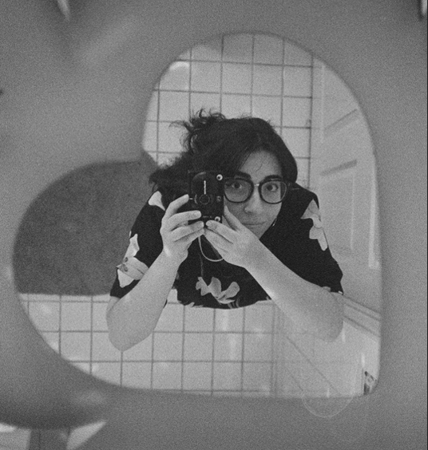

Vanessa Quintero

Summary
Work Experience
Hogarth Worldwide
Interactive Associate Producer
Miami, FL | May 2024 - Present
Responsibilities:
- Produce pristine web deliverables for Latin American and Canadian markets.
- Collaborate with cross-functional teams to ensure project milestones are met.
- Assist in the development and execution of interactive projects.
Upswell
Interactive Producer / Project Manager
Portland, OR | January 2022 - May 2023
Responsibilities:
- Responsible for production and project management of projects ranging from websites and software to exhibits and films.
- Manage teams and workflows across several diverse disciplines, including development, animation, videography, visual design, physical design, UX/UI, fabrication, and more.
- Create project schedules and milestones at kickoff, work with my teams to figure out work estimates per project phase, and provide regular update meetings and communications with clients and collaborators throughout the project.
- Participate in creative meetings and brainstorms, often contributing to the overall strategy and direction of projects.
- Script, storyboard, and edit films for exhibits and social media.
- Keep track of project budget, hours, and maintenance contract quotas.
Maverick Media
Digital Producer
Portland, OR | January 2021 - October 2021
Responsibilities:
- Worked on a series of live action projects for the Pokemon Trading Card Game with hero videos, social campaigns, and paid media campaigns tied to each project.
- Constantly communicated with both client and suppliers to keep everyone in the loop and happy with project status.
- Created and managed budgets and schedules.
- Managed teams of creatives to make the best possible product while ensuring their own growth and happiness.
Verizon Media / Yahoo! + AOL
Producer
New York, NY | August 2017 - January 2021
Responsibilities:
- Conducting research and development for original series, including casting and ideation for new series and their directions
- Producing videos from start to finish and being the liaison between the company and outside production crews.
- Traveling to on-site locations to direct and supervise video production crews.
- Shooting and editing in-house content for select series and social assets.
Education
Boston University
BS, Film | BS, Advertising
2013 - 2017
Skills
Production, Project Management, Videography, Editing, Writing, Collaboration, Development, Design
Get in Touch
About Me
E-mail